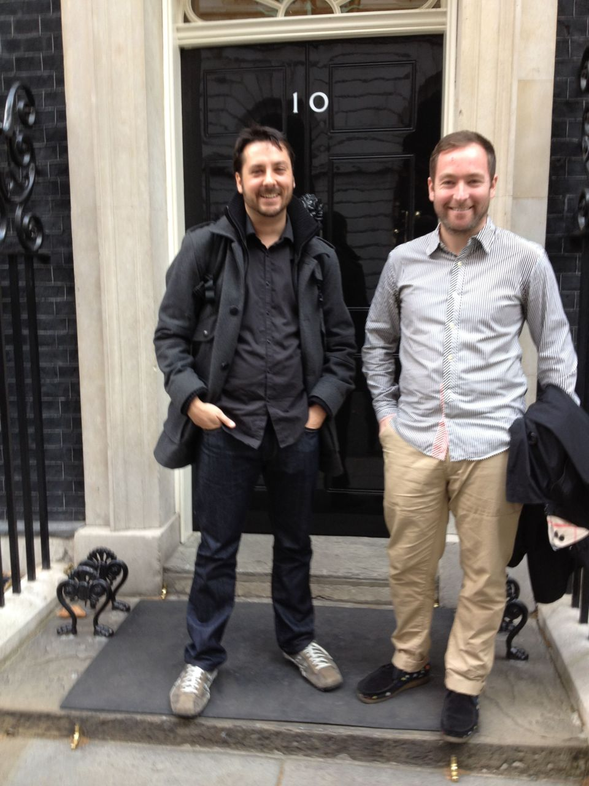

No. 10 Downing Street
It’s not often you get to say that your job took you to No. 10 Downing Street :) Stephen and I chatted to the the Prime Minister’s digital team about Apps.
It’s not often you get to say that your job took you to No. 10 Downing Street :) Stephen and I chatted to the the Prime Minister’s digital team about Apps.